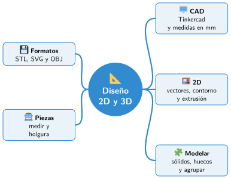

Bloque V · Diseño y fabricación digital
UD11 Diseño 2D y 3D
Sesiones
- Sesión 11.1 Diseño asistido por ordenador (CAD) con Tinkercad
- Sesión 11.2 Diseño 2D: vectores y contornos
- Sesión 11.3 Técnicas de modelado 3D
- Sesión 11.4 Modelos STL y otros formatos
- Sesión 11.5 Diseñar piezas para un robot
Al terminar la unidad
Mapa mental de la unidad

✏️ Repasa la unidad con el mapa: tapa una rama y explica en voz alta lo que pone.